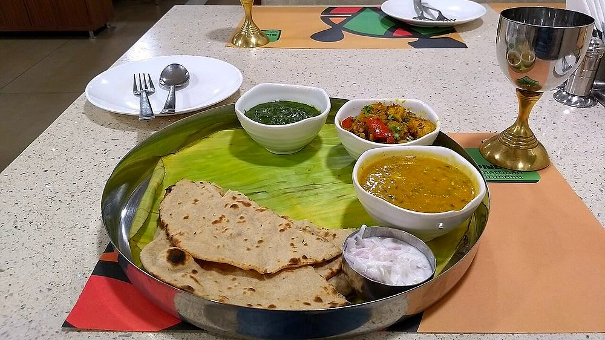

Contains: crustacean shellfish, sesame, mustard
Checked against the ingredient list for ten allergens: milk, egg, fish, crustaceans, tree nuts, peanuts, sesame, mustard, soy and gluten. Brands vary, so read the label on anything new to you.
Ingredients
Quantities for 4.
- 3 small crabs, cleaned and quartered Crabshells cracked; the shell carries the flavour
- small lime-sized ball, soaked in 400ml warm water Tamarind
- 2, crushed by hand Tomato
- 10 cloves, lightly crushed with skin on Garlic
- 2 tsp Black Pepperhalf ground with cumin, half crushed at the end
- 1.5 tsp Cumin Seeds
- 3 Dried Red Chilli
- 3 sprigs Curry Leaves
- 1/2 tsp Turmeric
- 1/4 tsp Asafoetidause compounded-free hing to keep this gluten-free
- 1 tsp Mustard Seedsfor the tempering
- 1/4 tsp Fenugreek Seedsoptional
- 2 tbsp Sesame Oilgingelly oil
- 3 tbsp, chopped Coriander Leavesoptional
- 600ml Water
- to taste Salt
Cookware
stovetop, blender
Before you start
- Ask the fishmonger to clean the crabs but keep the shells cracked and the claws on. Almost all the flavour of nandu rasam comes out of the shell.
- Soak the tamarind in warm water 20 minutes and squeeze it out well; the rasam should be sour enough to make you blink.
- Rasam must never boil hard once the tamarind water is in. It goes cloudy and bitter.
Method
- Pound the pepper, cumin, dried chillies and 4 of the garlic cloves coarsely in a blender. Pulse it, do not powder it.Coarse pepper floats and perfumes the broth. Fine powder sinks and makes it muddy.
- Boil the crab pieces in 600ml water with turmeric and salt for 10 minutes. Skim the grey foam off the top.Skimming is what keeps the finished rasam clear.
- Lift the crab out and set aside; keep the cooking liquor.
- Add the tamarind water, crushed tomatoes, remaining garlic, one sprig of curry leaves and half the pounded masala to the crab liquor.
- Simmer uncovered 12 minutes, until the raw sourness of the tamarind has gone and the liquid smells sweet at the edges.
- Return the crab, add the rest of the pounded masala and bring just to the point of frothing. Bubbles at the rim, no rolling boil. Turn it off.The moment a rasam boils it loses its top note. Catch it at the froth.
- In a small pan heat the gingelly oil, crackle the mustard seeds, add the fenugreek, asafoetida and remaining curry leaves, and pour it over.
- Cover and rest 5 minutes, then stir through the coriander leaves and serve hot with rice, or on its own in small steel tumblers.
Safe temperatures: Prawns, crab and squid are done when the flesh is opaque and pearly right through. Reheat leftovers to 74°C / 165°F. FoodSafety.gov
Storage
Keeps 2 days refrigerated. Reheat only to steaming, never to a boil. The crab is best eaten the first day; the broth alone reheats fine.
Nutrition Medium estimate
Low protein: 5 g a serving, 16% of the calories
| Per serving111 g | Per 100 g | |
|---|---|---|
| Calories | 124 kcal | 112 kcal |
| Protein | 5.0 g | 4 g |
| Carbohydrate | 8.4 g | 8 g |
| of which sugars | 1.9 g | 2 g |
| Fibre | 2.3 g | 2 g |
| Fat | 8.6 g | 8 g |
| of which saturated | 1.2 g | 1 g |
| of which unsaturated | 6.9 g | 6 g |
Ingredients given to taste count as zero, so the real figures run a little higher. Nearest database match used for asafoetida, curry leaves. Estimated from raw ingredients using USDA FoodData Central.
Times, yields, allergens and nutrition are guidance. Use your own judgement on doneness and on storing. More in About.